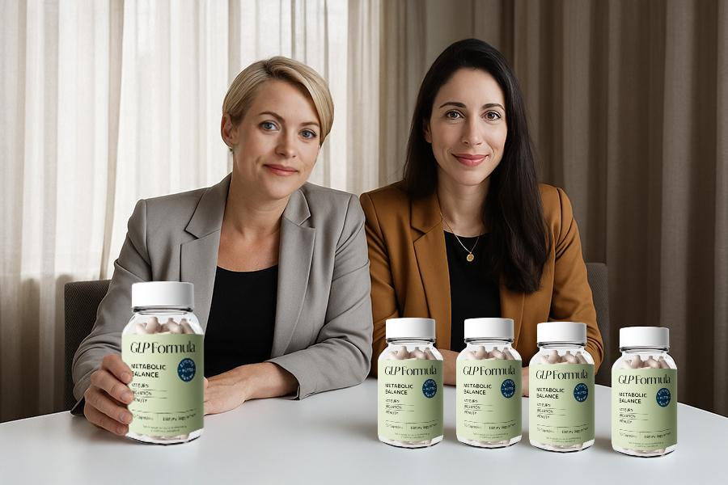

Det galna erbjudandet: Alla i Draknästets jury stöder denna produkt!
En rapport av Ella Schmitz |(Det var det populäraste avsnittet i den långa historien av "Draknästet" - syster-teamet Anna och Janina Martin kunde övertyga hela juryn med sin unika produkt.)
A
ldrig någonsin tidigare har hela "Nästet"-juryn oberoende beslutat att
investera miljontals pund i en enda produkt.
Efter att ha köpt en otrolig
2andel på 25 % i systrarnas företag,
hjälpte domarna personligen de två systrarna att göra om varumärket och
paketera om deras mirakelprodukt.
De två systrarna, som blev kända över en natt, har examen i såväl näringsvetenskap
som idrottsmedicin bakom sig. Investerarna insåg omedelbart att det var
en bra produkt och att systrarna "bara" behövde hjälp med marknadsföring.
De två systrarna lovordade sin produkt som det
största steget i viktminskningens historia.“
. Investerarna var skeptiska till en början, men de två systrarna kunde
bevisa effektiviteten av sin produkt med vetenskapliga studier. Jämfört
med andra produkter på marknaden stack den unika dubbla verkan för maximal
effekt ut.

"Jag insåg omedelbart produktens enorma potential och visste att jag var
tvungen att investera innan någon annan gjorde det. Speciellt eftersom
denna unika produkt bekämpar vikt från olika håll samtidigt, så att du
kan uppnå resultat ännu snabbare. När jag ser en bra affär måste jag bara
ta tag i den!"
"Vi blev chockade "
"Vi förväntade oss egentligen bara att få lite tips om marknadsföring.
Vi var inte ens säkra på om vi kunde få en enda investerare att träda fram
överhuvudtaget" säger Janina i avsnittet
Efter att ha fått totalt 5 erbjudanden från de individuella investerarna,
brast de två systrarna ut i tårar.
"Det kändes inte verkligt.Sveriges mest framgångsrika företagare sitter framför oss. Och de ville faktiskt vara en del av vårt projekt. Jag
tror att vi underskattade vår produkt hela tiden. Det var otroligt och
väldigt känslosamt för oss!" förklarar Anna.
Systrarna är de första tävlande i showens långa historia som får stående
ovationer och investeringar från alla jurymedlemmar. Deras liv förändrades
plötsligt över en natt.
Sedan detta otroliga avsnitt spelades in har de två systrarna arbetat
hårt med hjälp av tips från sina investerare.
"Vi har omarbetat utseendet helt på vår produkt och kommit fram till ny
paketering," säger Anna. "Vi är bra på labb och produktutveckling, men
vi vet ingenting om marknadsföring. Det är därför vi är så glada över att
investerare stöder oss så bra."
De två tillkännagav nyligen sin produkt, som samlade in miljontals pund
i investerarpengar.
"Produkten vi visade på showen har nu bytt namn till GLP Formula .
Det är den ursprungliga formeln - allt vi har ändrat är namnet och paketeringen,
så att vi bättre kan distribuera den utanför Europa" förklarar Janina.
"Vi är nu redo att erövra den amerikanska marknaden under 2024. Inte ens
den rådande krisen kan inte stoppa oss!"
De två lanserade produktförsäljningen via sitt
företags webbplats
och sålde slut inom 5 minuter.
"Vi producerade faktiskt mer varor än vanligt. Vi lade det mesta av våra
egna pengar i produkten innan vi gick på showen. Vi producerade ungefär
10 gånger så mycket som vanligt. Det var riktigt ansträngande Vi trodde
att vi hade tillräckligt i lager, men vi hade fel! Vi sålde faktiskt slut
inom 5 minuter!" Anna gladde sig. "Det var helt galet!"
Medan "Näste"-domarna skålar för sin smarta investering,
så vurmar kvinnor om GLP Formula på nätetoch
säger att resultaten av denna produkt har förändrat deras liv.
Kliniska studier av GLP Formula har visat att kvinnor som använder denna produkt har kunnat minska
sin fettprocent drastiskt och att fortsatt användning upprätthåller detta.
Med detta kunde de två systrarna övertyga investerarna
Systrarna har lagt all sin energi på att utveckla en formel. De kliniska studierna övertygade varenda investerare om dess effektivitet.Till skillnad från många andra produkter som har presenterats på showen, har GLP Formula genomgått flera serier av tester där följande punkter noterades:
- GLP Formula dubbla verkan hjälper till att avgifta kroppen och bränna fett samtidigt
- Preparatet reglerar kroppens ämnesomsättning till en normal nivå
- Reglerar blodsockernivån till en optimal nivå, vilket gör det svårare för kroppen att lagra fett i celler
- Dämpar glupsk hunger så att kaloriintaget minskas
Systrarna kunde till och med övertala ett helt gäng kändisar
"Jag var deltagare i den första studien av GLP Formula. Min läkare anmälde mig till studien eftersom min fetma var livshotande. Jag gick ner 44 kilo i studien med GLP Formula. Utan diet eller motion. Jag har slapp hud på magen som ett resultat, eftersom jag gick ner så mycket i vikt, men jag kommer att få det borttaget. Jag hade en mycket bra erfarenhet av GLP Formula och hade inga markanta biverkningar" - Chloe Ferry
"Jag har lyckats gå ner i vikt förut, men det har alltid slutat med att jag går upp allt igen – ofta med några extra kilon på köpet.Efter att ha gått ner 30 kilo känns allting mycket lättare nu – både fysiskt och mentalt." - Sofia Lysén
"Jag har ett väldigt hektiskt schema och därför inte så mycket tid för träning. Det är därför jag älskar GLP Formula! Bara några minuter på morgonen och kvällen är tillräckligt för mig!" - Sara Filipsson
Ge dig själv kändisbehandlingen
GLP Formula är för närvarande endast tillgängligt på nätet. Systrarna arbetar för närvarande för att få godkännande att sälja på apotek i EU.
Produkten är svår att tillverka och efterfrågan är för närvarande högre än produktionen. "Det är viktigt för oss att inte kompromissa med kvaliteten", säger Anna. " Men tack vare Drakarna har vi kunnat utöka vår produktionskapacitet avsevärt , så att vi kan leverera till alla kunder omedelbart. Det känns bra och alla är nöjda ."
GLP Formula har redan sålt slut 3 gånger sedan det sändes i september. Systrarna och lejonen har siktet inställt på den amerikanska marknaden som sitt nästa mål för 2024.